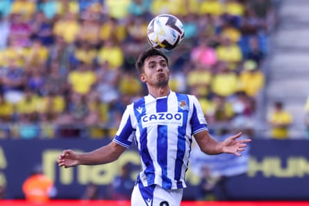
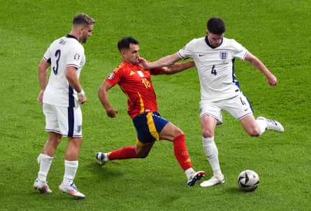

T he way Martín Zubimendi remembers it, the day he was given the chance to be a ballboy for Real Sociedad against Manchester United he was more nervous than when he had to play. Standing at the side of the pitch, he found himself transfixed, the game flying by. So transfixed, in fact, that he forgot it was his job to pass the ball to the players and at one point Claudio Bravo, in goal that night at Anoeta, had to come over and take it off him because he was standing there watching. It was the first time it had happened to him; it would also be the last.
If there is anything that defines Arsenal’s new midfielder , it is that he is so calm, so in control. “He oozes assuredness from every pore,” says the Spain coach, Luis de la Fuente. “He doesn’t get nervous walking a tightrope with no safety net.” When he’s out there, games don’t just go by; they usually go where he wants them to. And as for passes, what he forgot to do that night defines him now: there were 1,752 of them in La Liga last season. No midfielder outside Real Madrid or Barcelona played more.
Raised in the San Sebastián neighbourhood of Gros, where he has walked his dog daily, quietly heading across the beach or up to Elía which looks out over the bay, Zubimendi was Gipuzkoa chess champion at under-12 level. It fits the way he plays football, which he did even better: thoughtful, strategic, the whole picture. “Martín is a player who will bring us enormous quality and footballing intelligence; he has all the qualities to be a key player for us,” Mikel Arteta said.
Like Arteta, his coach now, Zubimendi played at local club Antiguoko, an extraordinary success story when it comes to football development in the city, before joining Real Sociedad at 12 and making his first team debut eight years later. Last year, his coach Imanol Alguacil said: “There is no one like him.”
Which isn’t, in truth, what most people say. Ask anybody about Zubimendi and one name comes up every time, sometimes two. There is Sergio Busquets, who Zubimendi once joked had done a lot of damage to central midfielders, setting new standards, new demands, forcing them to do things they had never done before. And then, inevitably, there is Xabi Alonso who he says “must get bored of hearing me talk about him ”. Alonso too is from Guipuzkoa and began at Antiguoko before joining Real Sociedad. They play in the same position, with the same style, have the same agent, and listening to Zubimendi explain his craft, even sound the same.
Alonso has been Zubimendi’s coach at Real Sociedad’s B team, taking it upon himself to teach him, bringing out the player he could see inside. Even after Zubimendi’s promotion to the first team, Alonso would stop him at the Zubieta training ground and go through the game with him, offering advice. As for being tired of Zubimendi talking about him, forget it. The admiration is mutual, the values shared. This summer, Zubimendi appeared a perfect signing for Real Madrid. Alonso, Zubimendi says, led without it ever being for show; “Martín,” Alonso says, “thinks more about his teammates than himself. He has that ability to generate play, make those around him better, organise. He understands the next step before the ball gets to him.”
Martín Zubimendi has shown at Real Sociedad that he can blend quality on the ball with defensive duties.Photograph: DAX Images/NurPhoto/Shutterstock
He also understands that is not all there is to the game. Not least because he has been told it. He has talked about needing to see beyond the short pass, learning to shift the length of his deliveries, and there is a dynamism about his play that Alonso And Busquets didn’t have. There’s also an ability to do the more traditional duties of a defensive midfielder. Only four defenders in Spain made more tackles than he did last season. If there is one thing that Alguacil is obsessed with it is the intensity with which he thinks the game should be played, the determination to compete and put the boot in if needs be. Zubimendi reckons he might have been the player who most had the manager on his back. “Imanol asks me to talk more, to be more aggressive,” he said. “Your role is to be constantly helping everyone and talking is part of that. That and the challenges.”
Zubimendi is naturally quiet, made in the Gipuzkoan mould. Talk to him and he’s engaging, warm company, the analysis impressive, but there is no show. Everyone in San Sebastián knows him; outside, it is tempting to suggest, too few do. Or at least that, without a lobby to champion him, without any desire to demand the spotlight, he has not always had the recognition his performances deserved.
In fact, when Rodri went off injured in the final of Euro 2024, to be replaced by Zubimendi, it wasn’t only the England fans thinking this was their chance. Up in the directors’ box in Berlin, where the presidents of the regional federations were sat, one of the Basque representatives heard the muttering from the row behind: Rodri going off was a disaster, they were screwed now, Spain were going to lose . The way he recalls it, he turned round and had a go, saying that anyone would think they had never seen Zubimendi play and maybe they should watch someone outside Madrid and Barcelona for once. For a moment, it got a bit tense. By the end of the night Spain were European champions ; Zubimendi had dominated the second half.
If they had doubted, De la Fuente had not. “Rodri is the best midfielder in the world,” he had said, “but Zubimendi is the second best. Martín gives you everything you ask for and has a fantastic talent. He’s a guarantee, totally reliable. He always plays calmly, unhurried and every decision is the right one.” Others had seen it too. In 2023, Xavi Hernández tried to persuade Barcelona to sign him. The following summer, Liverpool thought they had him; so did some Real Sociedad players.
Martín Zubimendi played a significant part in Spain’s victory over England in the Euro 2024 final after replacing Rodri.Photograph: Andrew Milligan/PA
At the end of the Euros, Álex Remiro had rented a house in Ibiza and invited the teammates with whom he played for both Real Sociedad and Spain: Robin Le Normand, Mikel Oyarzabal, Mikel Merino, and Zubimendi. Oyarzabal went but, one by one, the problems appeared: Le Normand had to arrange his move to Atlético Madrid, Merino was about to go to Arsenal , and Zubimendi wasn’t sure he was going to make it either, because there were things to sort out. Not you too, Remiro replied, not this year.
Next year, then. Home called and Zubimendi stayed for now but 12 months on it is time. “It’s hard to find the right words to say goodbye; it hasn’t been easy but the moment has come,” he wrote. “Once I had made the decision to go, I was focused on Arsenal because I think their style is the right one for me. [The manager and I] have a lot in common. We come from the same city and played for the same teams.” Starting at Real Sociedad, where one night Zubimendi let the game pass by him but never again.